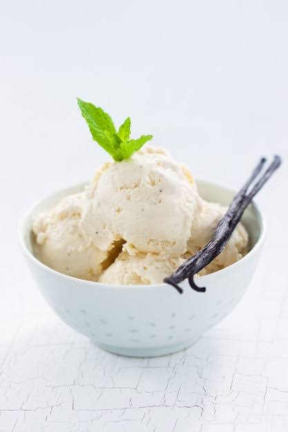

When was the last time you made homemade ice cream? If it wasn’t this summer, it was wayyy too long ago. Break out your ice cream maker, and make this homemade ice cream recipe stat!
You can buy vanilla ice cream at any grocery store, but it’ll never taste as good as the stuff you make yourself. This homemade ice cream is rich and creamy, with an indulgent vanilla flavor that even chocolate aficionados will love. And the best part? This homemade ice cream recipe is so easy to make. We’re talking 5 ingredients and 15-ish minutes of hands-on prep. Full disclosure, there are a few hands-off parts of this recipe that require some patience, but once you taste this homemade ice cream, I think you’ll agree that every second of waiting was worth it. It really is the best summer treat.